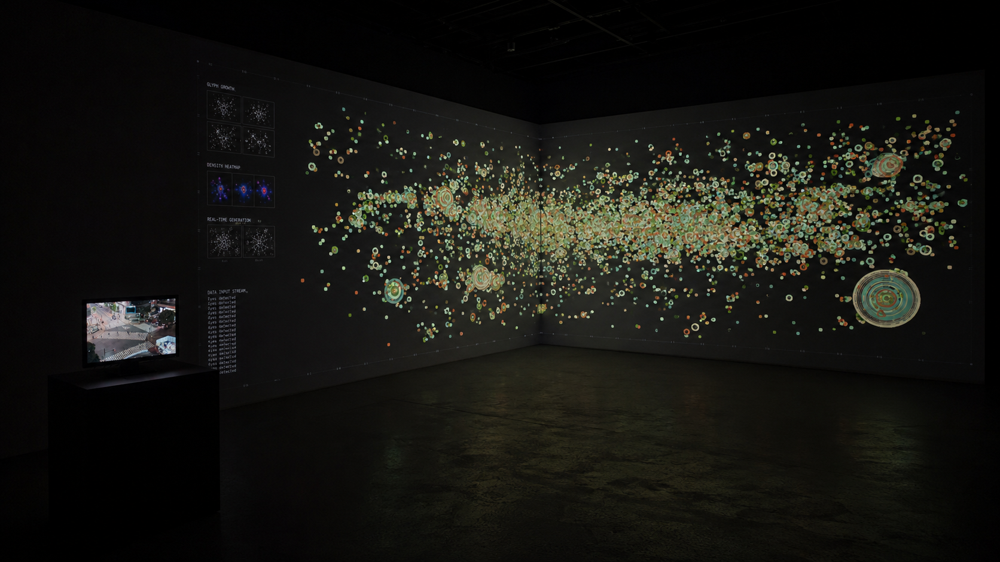
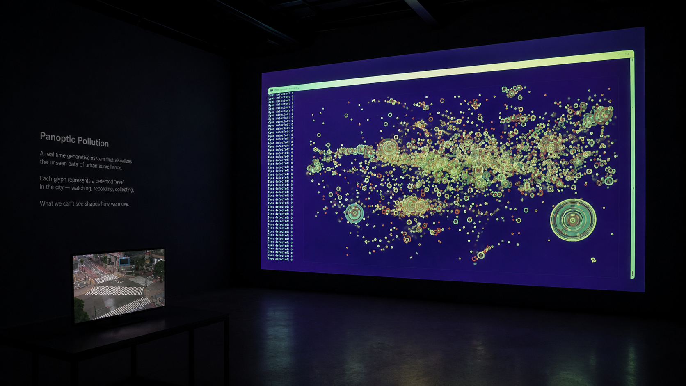
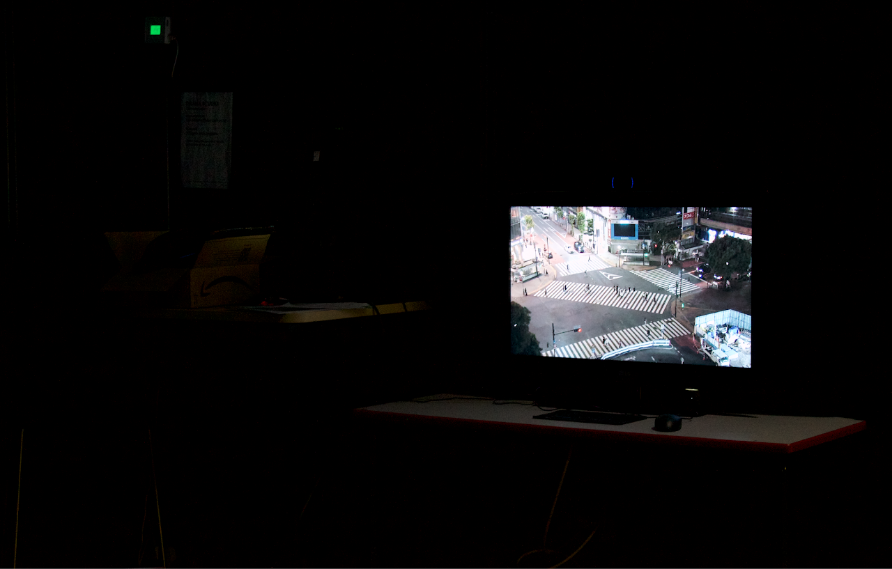
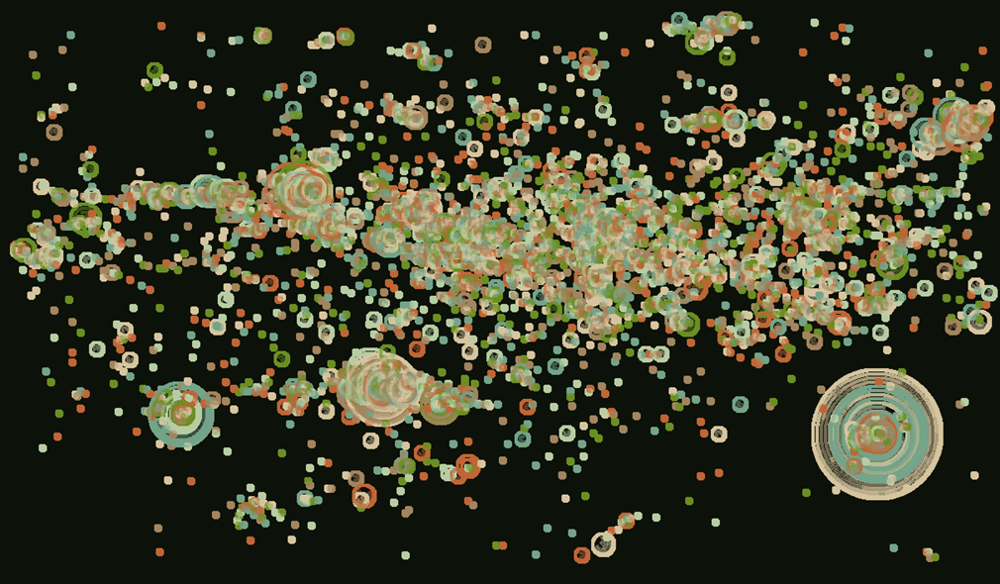

Panoptic Pollution
Panoptic Pollution is a dual-projection installation. One screen displays a live, unfiltered public CCTV feed of a public space, observational, and silent. Next to it, a second screen visualising the gaze of viewers watching the CCTV in real time: a slowly forming heat map rendered in a coloured spectrum of glyphs. The more sustained or repeated the gaze in a given area, the larger the glyph grows; a collective drawing of attention. Areas that are ignored remain black while areas over-observed become saturated and unstable. When a viewer shifts focus from the CCTV feed to the projection of their own gaze traces, the system introduces minor visual disruption, a break in the line drawing, a feedback loop critiquing digital narcissism and self-surveillance. Over time, the screen reveals zones of obsession, neglect, and distortion.
Installation




Live Work